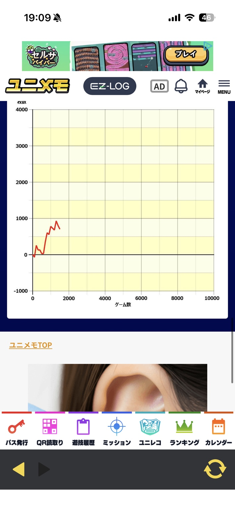

実戦データの読み方
「当たりは軽かったか」「14枚を何回取れたか」。ユニメモでは、ボーナス結果と技術介入の成績を別々に振り返れます。このページでは、数字を見るときの分母と記録のポイントを説明します。
掲載内容を確認 →機種ガイド
ユニメモのボーナス確率はどのゲーム数で見る？14枚取得率はどう読む？短時間実戦の例とともに、数字を振り返るポイントを解説します。
「当たりは軽かったか」「14枚を何回取れたか」。ユニメモでは、ボーナス結果と技術介入の成績を別々に振り返れます。このページでは、数字を見るときの分母と記録のポイントを説明します。
掲載内容を確認 →参照したデータは、2026年10月12日・14日・15日のシュウ３のユニメモです。終了画面番号やBGMの回数だけでは、設定の高低を判断できません。
このページは実戦データの読み方を扱います。目押し位置などの打ち方、設定示唆の対応表、天井狙いの基準を説明するページではありません。
データの出どころを確認 →「当たりは軽かったか」「14枚を何回取れたか」。ユニメモでは、ボーナス結果と技術介入の成績を別々に振り返れます。このページでは、数字を見るときの分母と記録のポイントを説明します。

本人の記録方法を整理したものです。機種仕様・技術介入手順を確定する攻略情報ではありません。
参照したデータは、2026年10月12日・14日・15日のシュウ３のユニメモです。終了画面番号やBGMの回数だけでは、設定の高低を判断できません。
このページは実戦データの読み方を扱います。目押し位置などの打ち方、設定示唆の対応表、天井狙いの基準を説明するページではありません。